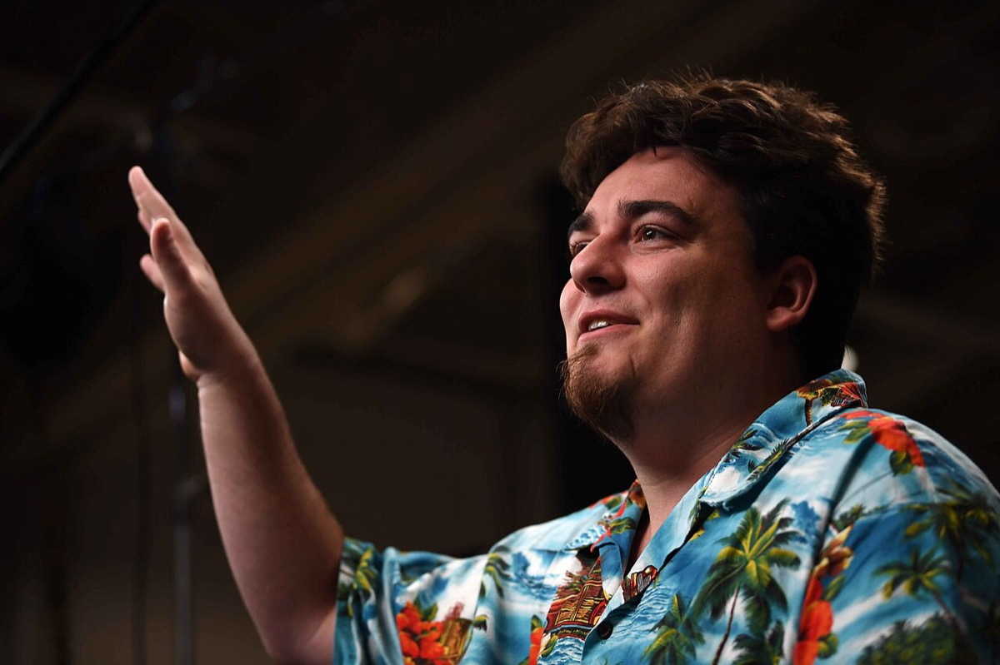
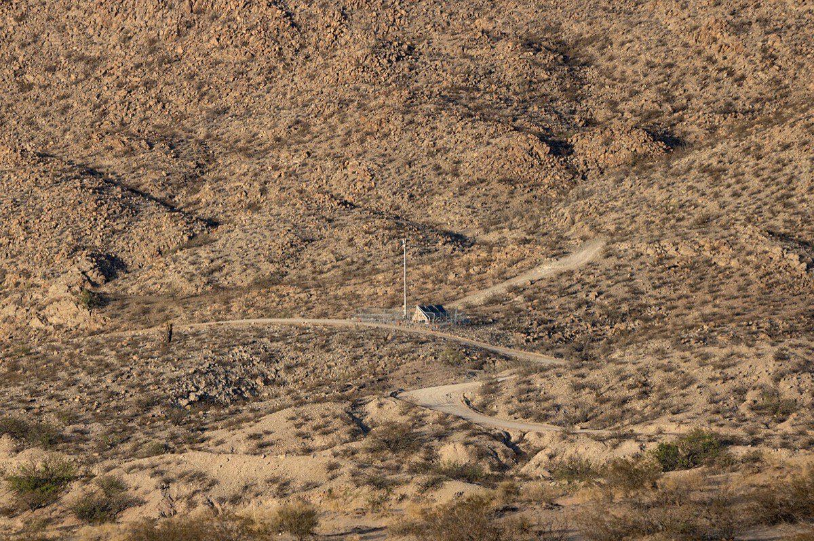
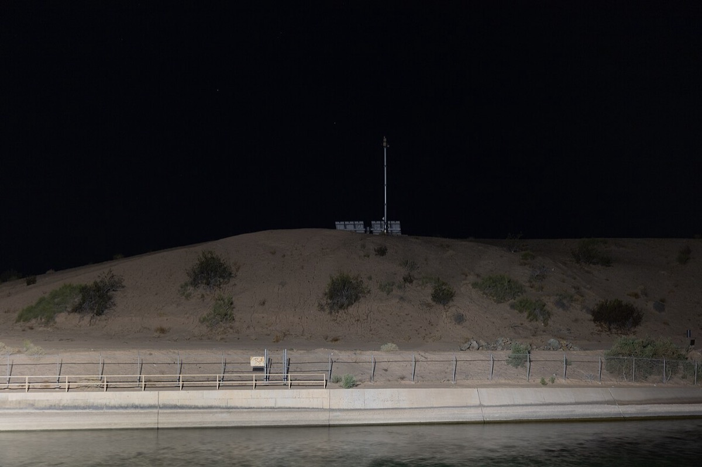
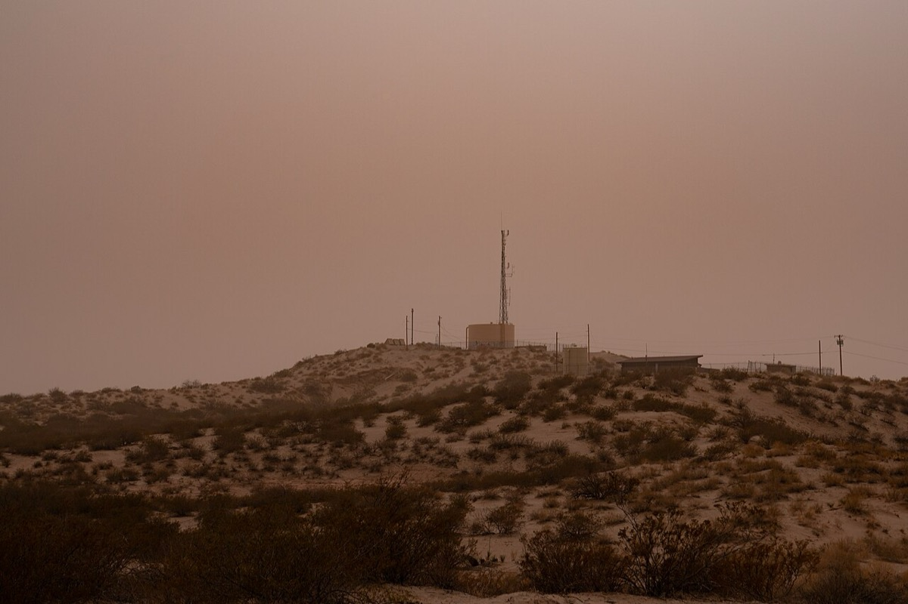
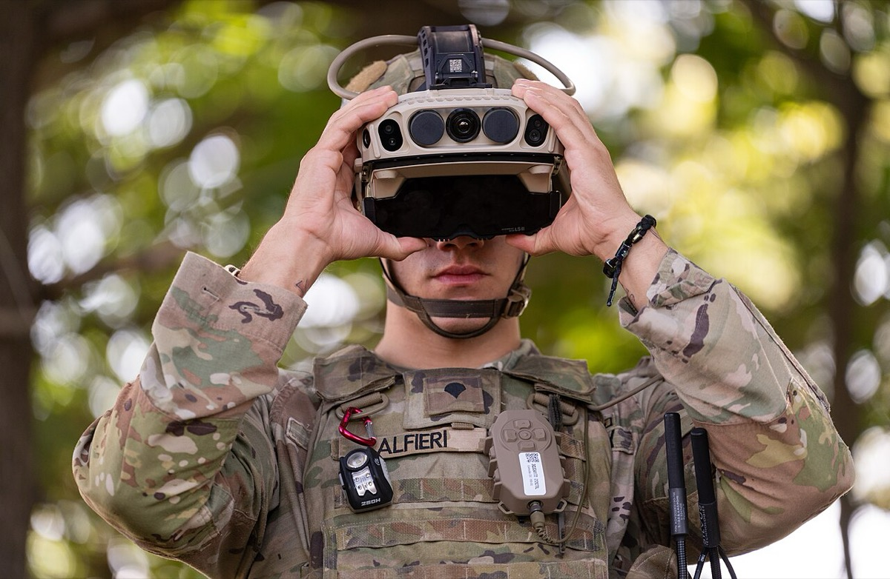
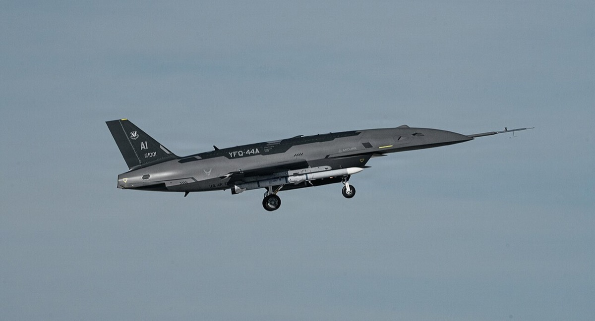
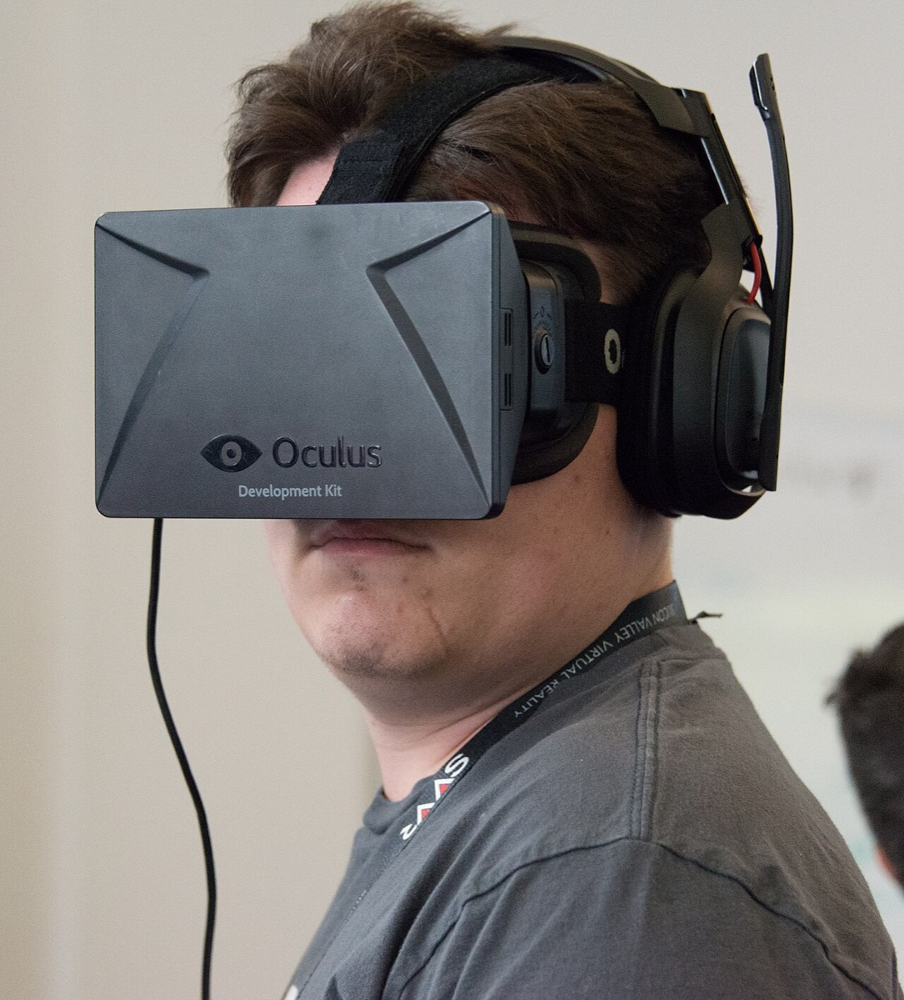
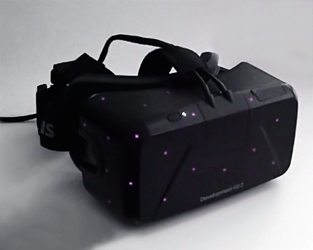
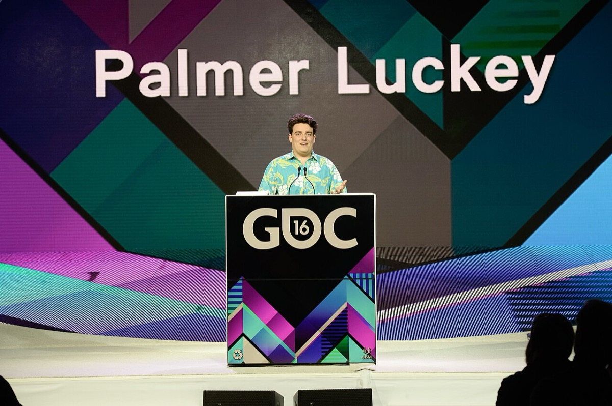
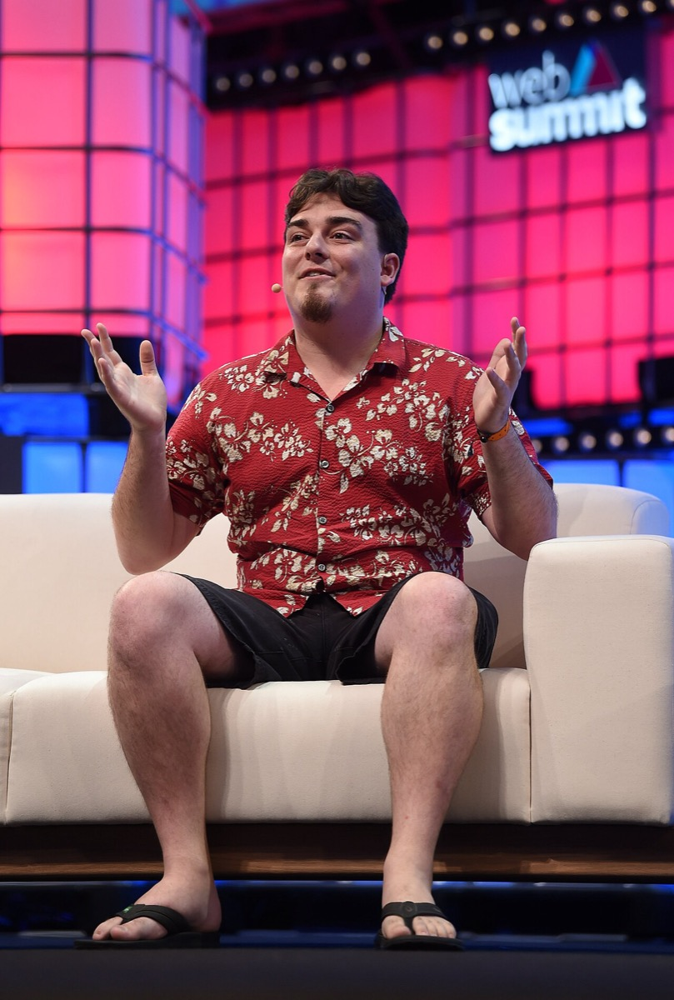

home / people / パルマー・ラッキー
パルマー・ラッキー — Oculus から Anduril まで
Palmer Luckey 1992.09.19 – ／起業家、Oculus VR 創業者・Anduril Industries 共同創業者
Oculus Anduril 防衛調達
納期ギャップ Facebook退社 IVAS
判断は二つである。第一に、Luckey が Facebook 退社後に本人の時間を防衛創業へ再配置した選択を、既存プライムの納期・運用ギャップを補う経路として読むか。第二に、2017年の退社主因を政治寄付後のリスクと読むか、製品打ち切りと読むか。後者は公開資料だけでは固定できない。本人の手取り・持分・Anduril への個人出資額は公開一次資料に無い。
改稿日 2026年11月11日（初稿 2026年9月26日）。数値の基準日は改稿日。存命人物のため、出典のない私生活・人物評・投資判断は書かない。公開時系列の満年齢は生年月日1992年9月19日からの年差で算出する。Facebook 買収の発表額と裁判証言額、Nimble America 寄付額（報道 $10,000（約110万円）／本人後年 $9,000（約98万円））、退社が解雇か自主退社かは報道・本人・会社で説明が異なる。防衛契約は上限額（ceiling）、API の child_award_total_obligation、確定発注を区別する。評価額と契約の同時系列は因果を主張しない。
① 先に結論Verdict First
退社→創業
約3か月2017-03 → 2017-06
Facebook 買収発表
約 $2B2014-03-25・約2,100億円
AST API義務額
$929.9Mchild_award・取得日2026-11-11・約990億〜1,400億円
Anduril 評価額
$30.5BSeries G・2025-06・約4.6兆円
先に結論を置く。
1. Luckey は時間を防衛創業へ再配置し、ギャップ後の契約経路を得た。 本人は2017年3月に Facebook／Oculus を離れ、同年6月に Anduril を共同創業した。公開資料上、退社後に消費者 VR 会社を再創業した記録は無い。本人の手取り・持分・Anduril への個人出資額は非開示のため、個人資本の再配置は主張しない。共同創業会社が得たヘッドラインのうち CBP AST の PoR 化（2020-07）と IVAS の前プライム未達後の移管（2025-02／04）は、既存側の配備・運用ギャップの後に地位を得た。評価額は2020年 $1.9B（約2,000億円）から2025年 $30.5B（約4.6兆円）へ上がり、当該契約と同じ上昇局面にある。評価上昇がギャップ補完の因果結果であることは主張しない。CCA の Fury 選定は性能競争側の併存事例である9 10 11 12 41
2. 退社の主因は公開資料では固定できない。 直前の公開イベントは2016年9月の政治寄付報道である。本人は2019年に「I got fired」と述べ寄付との関係に言及し、Zuckerberg／Meta は政治理由を否定した。製品打ち切りを退社理由とする本人または会社の一次説明は公開資料に無い。前後関係は寄付報道→退社→防衛創業と整合するが、寄与の大小を切る解雇通知や合意退職文書が無いため、主因の特定は判定不能とする5 43 7
主張
読者と判断： Luckey が退社後に本人の時間を防衛創業へ再配置した選択を、既存プライムの納期ギャップを補う経路として読むか。2017年の退社主因を政治寄付後のリスクに固定できるか、製品打ち切りに固定できるか。
主張： Luckey は Facebook 退社後、消費者 VR の再起業ではなく、本人の時間を防衛創業（Anduril 共同創業）へ再配置した。共同創業した Anduril のヘッドライン契約のうち CBP AST の PoR 化と IVAS の前プライム未達後の移管は、既存側の配備・運用未達の後に地位を得ており、評価額上昇局面（2020年 $1.9B（約2,000億円） → 2025年 $30.5B（約4.6兆円））と同時系列にある。本人の手取り・持分・Anduril への個人出資は非開示のため、個人資本の再配置は主張しない。評価額上昇がギャップ補完の因果結果であることは主張しない。CCA の Fury 選定は性能競争側も併存する。 反証条件： 退社後に本人が消費者 VR 会社を創業した一次記録がある場合。または当該ヘッドライン契約がいずれも前側未達後の交代ではなく初回性能競争のみである場合。または契約イベントが評価上昇局面の外側にしか存在しない場合。 判定： 支持（時間の再配置とギャップ後の契約経路。個人資本と評価上昇の因果は範囲外）主張： Luckey の Facebook 退社の主因は、2016年の政治寄付報道に対する社内・対外リスクである。Oculus 製品の打ち切りは主因ではない。 反証条件： 本人または Facebook／Meta が一次資料で製品打ち切りを退社理由と述べた場合。または退社決定が寄付報道より前に確定した一次記録がある場合。または解雇通知・合意退職文書が政治以外の単一理由を示す場合。 判定： 判定不能。公開時系列は寄付報道（2016-09）→退社（2017-03）→Anduril 共同創業（2017-06、約3か月）で整合する。本人は解雇と寄付に言及し、Meta 側は政治理由を否定する。寄与の大小を切る一次文書が無い。判定には解雇通知または合意退職の一次文書と、社内決定過程の記録が要る。
分解： 物理的制約は戦場向けセンサ・演算・通信である。お金の流れは Anduril への外部調達と防衛予算の義務額である。本人の売却対価・持分・個人出資額は非開示である。利得の帰属は Luckey・共同創業者・投資家・調達当局・前プライムに分かれる。法と強制力は調達資格と政治寄付の開示である。時間は退社から創業までの約3か月と、契約イベントと評価上昇の並びである。
② Luckey の公開時系列Public Chronology 日付が一次情報または複数報道で確定した出来事だけを並べた。各項目は事実、具体、なぜ効いたかの3層である。期のボタンで絞り込める。日付の右は、その時点の満年齢である。
該当する項目がない。
③ 主張1の検証 — 時間の防衛創業への再配置とギャップ後の契約Time Reallocated to Defense Founding


左は2019年5月22日、Collision（トロント）で Anduril 創業者としてインタビューを受けるパルマー・ラッキー。右は2024年5月、ニューメキシコ州 Sunland Park の Mount Cristo Rey に設置された CBP の Autonomous Surveillance Tower（AST）。Commons の説明は Anduril Industries 製である。主張1は、本人の時間を防衛創業へ移したあとのギャップ後契約経路を検証する。写真：Stephen McCarthy ／CC BY 2.0；Dugan Meyer ／CC BY 4.0／Wikimedia Commons
Luckey は2017年6月に Anduril Industries を共同創業した。共同創業者は Luckey と Trae Stephens である。加えて Brian Schimpf、Matt Grimm、Joseph Chen が名を連ねる。Founders Fund が初期資金を主導した。公開資料上、退社後に本人が消費者 VR 会社を再創業した記録は無い。本人の手取り・持分・Anduril への個人出資額は非開示である。初期資金は外部調達として確認できるが、本人個人の現金・株式の投入額は検証できない。評価額は次のとおりである。2020年 Series C で $1.9B（約2,000億円）。2021年 Series D で $4.6B（約5,100億円）。2022年 Series E で約 $8.48B（約1.1兆円）。2024年 Series F で $14B（約2.1兆円）。2025年 Series G で $30.5B（約4.6兆円）。9 10 33


左は2024年9月、カリフォルニア州 Calexico 東の All American Canal 脇に立つ CBP の Autonomous Surveillance Tower（AST）。右は2025年3月、ニューメキシコ州 Sunland Park の AST。いずれも Commons の説明は Anduril Industries 製・CBP 運用である。主張1の AST PoR 化の対象物である。写真：Dugan Meyer ／CC BY 4.0；Dugan Meyer ／CC BY-SA 4.0／Wikimedia Commons
2018年に南部国境向け監視塔のパイロットを開始し、2020年7月2日に CBP が AST を Program of Record と発表した。金額は確定発注の累計ではなく、USAspending API の IDIQ フィールドである。取得日 2026-11-11（同日再取得で同一値）。generated_unique_award_id は CONT_IDV_70B02C20D00000019_7014。フィールド名は child_award_total_obligation で、値は $929,925,994.58（2020年と2025年のレートで約990億〜1,400億円）。child_award_count は 25 である。API 画面の outlay や確定請求額とは別である。2025年12月には Extended Range Sentry Tower で約 $363M（約540億円）の追加契約が報じられた（Anduril 公式発表・single-source）28 41 44


左は2023年8月22日、Fort Drum での IVAS 1.2 試作機のユーザー評価（米陸軍写真）。右は空軍 CCA プログラムの YFQ-44A（Anduril Fury）。主張1は、IVAS が前プライム未達後の移管であることと、CCA が性能競争側の選定であることを分けて読む。写真：Jason Amadi / U.S. Army ／Public domain；Secretary of the Air Force Public Affairs ／Public domain／Wikimedia Commons
IVAS は Microsoft が2018年以降にプライムを務め、兵士装着試験で頭痛・眼精疲労・吐き気などの不具合が報じられた。枠の上限は約 $21.9–22B（約3.3兆円。ceiling）である。2025年2月11日、Microsoft と Anduril が次段階の提携を発表し、生産・ハード／ソフト開発・納期管理を Anduril が引き継ぐとした。2025年4月10日、陸軍が契約ノベーションを承認したと報じられた。Anduril 側はソフト更新周期の短縮（約180日から約18時間）を説明した。ceiling は即時の確定売上 $22B ではない。一方、2024年4月の CCA Increment 1 では Fury（YFQ-44A）が General Atomics と並んで選定され、Boeing 案は選外となった。これは性能競争側の事例である11 12 30 39 45
Anduril 評価額の推移（post-money）
単位は十億 USD。Series C 以降。因果ではなく同時系列の参照
出典10・33・35。Series E は約 $8.48B を $8.5B として表示。円は各年の年平均レートで換算した値である。
判定は支持 である。支持の内容は「Luckey が本人の時間を防衛創業へ再配置し、共同創業会社のヘッドラインにギャップ後の経路が含まれ、評価上昇局面と同時系列にある」ことまでである。個人資本の再配置と、評価上昇がギャップ補完の因果結果であることは主張しない。売上の内訳でギャップ経路の過半を示す一次資料は公開されていない。
④ 主張2の検証 — 退社主因は固定できるかCan Exit Motive Be Fixed


左は2014年5月19日、SVVR で Oculus Rift DK1 を装着したパルマー・ラッキー。右は位置追跡用の赤外線 LED を備えた Development Kit 2。主張2が比較する退社前の役職は、この消費者向け VR 系列である。写真：Dcoetzee ／CC0；ATs Kurvet ／CC BY-SA 4.0／Wikimedia Commons
前提の資本イベントだけ置く。2012年8月、Oculus Rift の Kickstarter は目標 $250,000（約2,000万円）に対し $2,437,429（約1.9億円。9,522人）を調達した。2014年3月25日、Facebook は合計約 $2B（約2,100億円）と発表した。内訳は現金 $400M（約420億円）、普通株式 23.1M 株（発表時点の評価約 $1.6B。約1,700億円）、達成条件付き追加最大 $300M（約320億円）である。Zuckerberg は2017年の裁判で実質約 $3B（約3,400億円）だったと証言した。Luckey 個人の税引後手取りは契約上非開示である2 3 4


左は2016年の Game Developers Conference におけるパルマー・ラッキー（公式 GDC 撮影。退社前）。右は2018年11月8日、Web Summit（リスボン）で Oculus と Anduril の創業者として登壇する本人（退社・防衛創業の後）。主張2は、この転換の主因を政治寄付後のリスクに固定できるかを検証する。写真：Official GDC ／CC BY 2.0；Diarmuid Greene / Web Summit ／CC BY 2.0／Wikimedia Commons
2016年9月22日前後、Daily Beast が Nimble America への $10,000（約110万円）の寄付を報じた（報道・single-source。本人は後年に約 $9,000（約98万円）と述べた）。本人は Facebook 上で謝罪した。2017年3月に Facebook／Oculus から離れた。同年6月に Anduril を共同創業した。間隔は約3か月である。Zuckerberg は2018年4月の上院証言で「not because of a political view」と答えた。本人は2019年の CNBC インタビューで「I got fired」と述べ、寄付との関係に言及した。WSJ（2018年11月）は社内の反発と少なくとも約 $100M（2017年のレートで約110億円）の支払い交渉を報じた（報道・single-source）5 6 7 8 43 9
退社後も Meta は Reality Labs として VR／AR セグメントを開示し続けた。営業損失の年次合計（2019–2025年）は約 $88.1B（各年のレートで約12兆円）である（自己計算）。これは「製品系列そのものが 2017年に打ち切られた」という読みの弱い反例にはなるが、退社主因の証明ではない。寄与の大小を切るデータではないため、判定には使わない36 37 38
I got fired… for no reason at all.（解雇された。理由は全く無い。）
2019年5月・CNBC Collision43
…it was not because of a political view.（…政治的見解が理由ではない。）
2018年4月・Zuckerberg 上院証言7
判定は判定不能 である。前後関係は政治寄付報道の後と整合し、本人発言は寄付側に寄る。Meta 側説明は政治理由を否定する。製品打ち切りを主因とする一次説明も無い。不在資料を支持の根拠にはしない。判定には次が要る。解雇通知または合意退職の一次文書。退社決定日の社内記録。本人または会社による理由の順位付け。
⑤ 判定の限界と金額の欠落Limits and Missing Amounts 主張の判定境界に関係する金額と欠落だけを置く。
ZeniMax。 2017年2月の陪審は総額 $500M（約560億円）、うち Luckey 個人 $50M（約56億円）と報じられた（報道）。2018年12月に非公開和解。確定支払額は N/A である23 25
政治寄付と役職離脱。 寄付額は $9,000–10,000（約98万〜110万円。諸説）である。役職離脱後、本人は約3か月で Anduril を創業した。WSJ は少なくとも約 $100M（約110億円）の支払い交渉を報じた（報道・single-source）5 8
IVAS ceiling と確定発注の差。 約 $21.9–22B（約3.3兆円）は上限枠である。ノベーション後も既存契約下の新規ハード大量生産は当面想定されていない、と Anduril 幹部が説明した報道がある。主張1の同時系列を ceiling で過大に伸ばすと、義務額との差で再評価が必要になる45 11
欠落データ。 Facebook 買収時の Luckey 個人の税引後手取りは非開示である。ZeniMax 和解の支払額と負担割合も非開示である。Anduril の LP 向け持分比率と IVAS の現時点確定発注額も、公開一次資料では揃っていない。主張2の主因判定に必要な解雇通知・合意退職文書も未公開である。
⑥ 金額を日本円で読むAmounts in Yen Anduril の評価額はドルで2020年から約16倍、円では約22倍に上がった。差は2020年の1ドル106.8円から2025年の149.6円への円安による。
ドル建ての金額は、FRED の円ドル相場（AEXJPUS）の年平均で円にした。物価で今の円に直す換算は省いた。2000〜2024年の日本の物価倍率は1.03〜1.21倍であり、差が2割以内にとどまるためである。一方で為替の差は大きく、2012年の1ドル79.8円と2024年の151.5円では同じドル額の円の額が約1.9倍異なる。複数年にまたがる金額は、各年の値をその年のレートで換算して合計するか、始点と終点の年のレートで幅にした。
換算に用いた出典は次の3点である46 47 48
FRED AEXJPUS（円ドル相場の年平均）46
総務省統計局 消費者物価指数 2024年年報 第17表 戦前基準5大費目指数（東京都区部）47
総務省統計局 2025年基準消費者物価指数 第14表 戦前基準5大費目指数（東京都区部）48
⑦ 誰が得をするか / 残っている問い / 出典Winners / Open Questions / Sources 誰が得をするか
公開系列で確認できる利得は次である。(1) Luckey と Anduril 共同創業者・従業員持分。個人比率は N/A。(2) Founders Fund など評価額上昇局面の投資家。(3) CBP／米軍。配備周期の短い監視塔と、IVAS のソフト更新周期短縮の受け手。(4) Microsoft。IVAS のプライムから外れ、Azure 側に残る。(5) Meta。Luckey 退社後も Reality Labs を継続した。競合プライムは、選外・移管の側に回る案件がある12 10 41
残っている問い
ヘッドライン契約の義務額増加と評価額上昇の前後関係を、四半期単位でどこまで因果として検定できるか。 現状の支持範囲は同時系列に限定している。CBP AST IDIQ の child_award_total_obligation $929,925,994.58（取得日 2026-11-11）のうち、標準塔と Extended Range の内訳はいくらか。確定発注・outlay との差はいくらか。 配備速度の継続判定に必要である。退社の解雇通知または合意退職の一次文書はあるか。退社決定日の社内記録はあるか。 あれば主張2の主因を再判定できる。
Wikipedia “Palmer Luckey”（生年月日・学歴・Oculus／Anduril 経歴の骨格） — https://en.wikipedia.org/wiki/Palmer_Luckey
Kickstarter “Oculus Rift: Step Into the Game”（2012-08。調達 $2,437,429／9,522人／目標 $250,000） — https://www.kickstarter.com/projects/1523379957/oculus-rift-step-into-the-game
Facebook Newsroom “Facebook to Acquire Oculus”（2014-03-25。合計約 $2B。現金 $400M／株約 $1.6B／EO 最大 $300M） — https://about.fb.com/news/2014/03/facebook-to-acquire-oculus/
USA Today “Oculus cost $3B not $2B, Zuckerberg says in trial”（2017-01-17） — https://www.usatoday.com/story/tech/news/2017/01/17/oculus-cost-3-billion-mark-zuckerberg-trial-dallas/96676848/
The Daily Beast “Oculus Founder Palmer Luckey Donated $10,000 to Pro-Trump Group Nimble America”（2016-09-22） — https://www.thedailybeast.com/oculus-founder-palmer-luckey-donated-dollar10000-to-pro-trump-group-nimble-america
CBS News / 60 Minutes “Tech mogul Palmer Luckey creating arsenal of AI-powered autonomous weapons”（2025-05-18。寄付を約 $9,000 と述べる本人発言） — https://www.cbsnews.com/news/palmer-luckey-anduril-ai-weapons-60-minutes-transcript/
Senate testimony 報道まとめ（2018-04。Cruz 質問に対し Zuckerberg「not because of a political view」） — https://en.wikipedia.org/wiki/Palmer_Luckey
The Wall Street Journal “Why Did Facebook Fire a Top Executive?…”（2018-11。社内反発、少なくとも約 $100M の支払い交渉。single-source） — https://www.wsj.com/articles/why-did-facebook-fire-a-top-executive-hint-it-had-something-to-do-with-trump-1541965245
Wikipedia “Anduril Industries”（共同創業者、製品系列、契約・調達の骨格） — https://en.wikipedia.org/wiki/Anduril_Industries
Reuters “Anduril secures $30.5 billion valuation…”（2025-06-05。Series G $2.5B、前年 $14B） — https://www.reuters.com/business/anduril-secures-305-billion-valuation-latest-fund-raise-2025-06-05/
TechCrunch “Anduril takes control of Microsoft’s $22B VR military headset program”（2025-02-11。初期予算約 $21.9B） — https://techcrunch.com/2025/02/11/anduril-takes-control-of-microsofts-22b-vr-military-headset-program/
Microsoft Source “Anduril and Microsoft partner to advance IVAS…”（2025-02-11。公式提携発表） — https://news.microsoft.com/source/2025/02/11/anduril-and-microsoft-partner-to-advance-integrated-visual-augmentation-system-ivas-program-for-the-u-s-army/
Road to VR “Q&A With Palmer Luckey, Creator of the Oculus Rift”（2012-10-16） — https://www.roadtovr.com/qa-with-palmer-luckey-creator-of-the-oculus-rift/
Los Angeles Times “Palmer Luckey’s Oculus Rift could be a virtual reality breakthrough”（2013-06-08） — https://www.latimes.com/entertainment/envelope/cotown/la-et-ct-palmer-luckey-oculus-rift-virtual-reality-20130608-story.html
WIRED “The Inside Story of Oculus Rift…”（2014-05-20） — https://www.wired.com/2014/05/oculus-rift-2/
Eurogamer “Happy Go Luckey: Meet the 20-year-old creator of Oculus Rift”（2013-07-11） — https://www.eurogamer.net/happy-go-luckey-meet-the-20-year-old-creator-of-the-oculus-rift
MTBS3D フォーラム投稿（Luckey, 2009–2012。Rift 命名・試作ログの原典） — https://www.mtbs3d.com/
Business Insider “Who Is Palmer Luckey…”（Series A／B の金額要約） — https://www.businessinsider.com/who-is-palmer-luckey
NBC News “In Oculus Lawsuit, Zuckerberg Reveals Key Details on $3B Acquisition”（2017） — https://www.nbcnews.com/tech/tech-news/oculus-lawsuit-zuckerberg-reveals-key-details-2b-acquisition-n707946
Forbes profile（2015頃純資産約 $700M 推定） — https://www.forbes.com/profile/palmer-luckey/
The Verge “Oculus VR and its founder sued by ZeniMax and id Software”（2014-05-21） — https://www.theverge.com/2014/5/21/5738208/oculus-vr-sued-by-zenimax
Engadget “Oculus VR and Palmer Luckey being sued…”（2014-05-21） — https://www.engadget.com/2014-05-21-oculus-vr-zenimax-lawsuit.html
Ars Technica “Oculus, execs liable for $500 million in ZeniMax VR trial”（2017-02-01） — https://arstechnica.com/gaming/2017/02/oculus-execs-liable-for-500-million-in-zenimax-vr-trial/
テキサス北地区連邦地裁記録（ZeniMax v. Oculus。陪審説示・減額判断）
報道各社 “Facebook and ZeniMax settle…”（2018-12。和解額非開示） — https://en.wikipedia.org/wiki/ZeniMax_v._Oculus
Seedlist 等の調達年表整理（Seed $17.5M 以降） — https://seedlist.com/startups/anduril-industries.html
The Dynamics “The History of Anduril Industries”（Seed 評価約 $88M） — https://thedynamics.ai/articles/anduril-history
CBP “CBP’s Autonomous Surveillance Towers Declared a Program of Record…”（2020-07-02） — https://www.cbp.gov/newsroom/national-media-release/cbp-s-autonomous-surveillance-towers-declared-program-record-along
Anduril 公式サイト／製品ページ — https://www.anduril.com/
米空軍 CCA Increment 1 選定報道（2024-04。Anduril Fury と General Atomics。Boeing 選外） — https://en.wikipedia.org/wiki/Anduril_Industries
Luckey／Anduril 発表（2020-09。ABMS 関連約 $967M） — https://en.wikipedia.org/wiki/Palmer_Luckey
Luckey／Anduril 発表（2022-02。SOCOM 対無人約 $1B） — https://en.wikipedia.org/wiki/Palmer_Luckey
Anduril “Anduril Raises $450 Million in Series D Funding”（2021-06-17。評価 $4.6B） — https://www.anduril.com/news/anduril-raises-usd450-million-in-series-d-funding
Reuters／CNBC 報道（2024-08。Series F $1.5B、評価 $14B） — https://www.reuters.com/business/anduril-secures-305-billion-valuation-latest-fund-raise-2025-06-05/
TechCrunch “Anduril raises $2.5B at $30.5B valuation led by Founders Fund”（2025-06-05。2024年売上約 $1B） — https://techcrunch.com/2025/06/05/anduril-raises-2-5b-at-30-5b-valuation-led-by-founders-fund/
Meta Investor Relations — Q4/FY2024 Results（Reality Labs 2024 損失 $17.729B、2023 $16.120B） — https://investor.atmeta.com/investor-news/press-release-details/2025/Meta-Reports-Fourth-Quarter-and-Full-Year-2024-Results/
Meta Investor Relations — Q4/FY2025 Results（Reality Labs 2025 損失 $19.193B） — https://investor.atmeta.com/investor-news/press-release-details/2026/Meta-Reports-Fourth-Quarter-and-Full-Year-2025-Results/default.aspx
Meta Form 10-K FY2021 セグメント開示（RL 2019–2021 損失 $4.503B / $6.623B / $10.193B） — https://www.sec.gov/Archives/edgar/data/1326801/000132680122000018/R23.htm
Breaking Defense “Army opens door to compete IVAS…”（Microsoft 下での試験問題と再競争圧力） — https://breakingdefense.com/2024/08/army-opens-door-to-compete-ivas-mixed-reality-goggles-after-microsoft-struggles/
Business Insider “Anduril’s Palmer Luckey… ‘There is no moral high ground in using inferior technology’”（本人発言） — https://www.businessinsider.com/anduril-palmer-luckey-ai-weapons-ethics-defense-tech-2024
USAspending API idvs/amounts（取得日 2026-11-11、同日再取得で同一値。確定発注累計ではなく API の child_award_total_obligation=$929,925,994.58。child_award_count=25。generated_unique_award_id=CONT_IDV_70B02C20D00000019_7014。child_award_total_outlay は別フィールド） — https://api.usaspending.gov/api/v2/idvs/amounts/CONT_IDV_70B02C20D00000019_7014/ （画面 https://www.usaspending.gov/award/CONT_IDV_70B02C20D00000019_7014 ）
CRS In Focus IF13022 “Army’s Integrated Visual Augmentation System (IVAS)”（OTA 上限約 $22B、ノベーション 2025-04-10） — https://www.congress.gov/crs_external_products/IF/PDF/IF13022/IF13022.1.pdf
CNBC “Oculus founder: ‘I got fired’ from Facebook…”（2019-05-22） — https://www.cnbc.com/2019/05/22/oculus-co-founder-i-got-fired-from-facebook-for-no-reason-at-all.html
Anduril “Anduril and U.S. Customs and Border Protection Expand Partnership With 200 Additional Extended Range Sentry Towers”（約 $363M） — https://www.anduril.com/news/anduril-and-u-s-customs-and-border-protection-expand-partnership-with-200-additional-extended-range-sentry-towers
Breaking Defense “Anduril gets green light from Army to take over Microsoft’s IVAS project”（2025-04。ノベーション、ソフト更新周期の説明） — https://breakingdefense.com/2025/04/anduril-gets-green-light-from-army-to-take-over-microsofts-ivas-project-exec/
FRED「Japanese Yen to U.S. Dollar Spot Exchange Rate」AEXJPUS（年平均。円換算に使用） — https://fred.stlouisfed.org/series/AEXJPUS
総務省統計局 消費者物価指数 2024年年報 第17表 戦前基準5大費目指数（東京都区部） — https://www.e-stat.go.jp/stat-search/file-download?statInfId=000040263662&fileKind=0
総務省統計局 2025年基準消費者物価指数 第14表 戦前基準5大費目指数（東京都区部） — https://www.e-stat.go.jp/stat-search/file-download?statInfId=000040501471&fileKind=0
.jpg){kind=link}
_on_Mount_Cristo_Rey_in_Sunland_Park,_New_Mexico.jpg){kind=link}
_beside_All_American_Canal,_East_Mesa_east_of_Calexico,_California,_September_2024.jpg){kind=link}
_in_Sunland_Park,_New_Mexico.jpg){kind=link}

_program.jpg){kind=link}


.jpg){kind=link}
.jpg){kind=link}